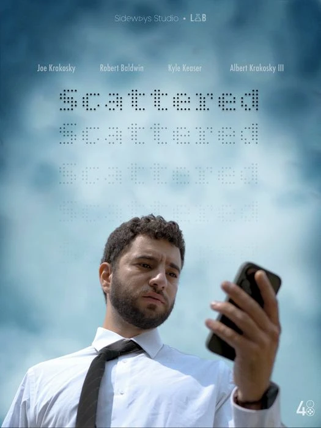
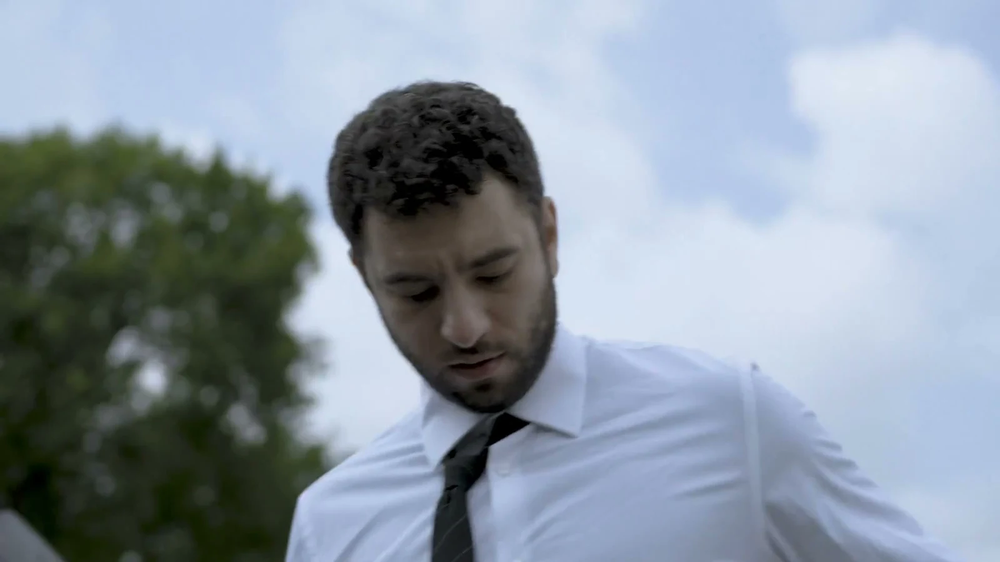
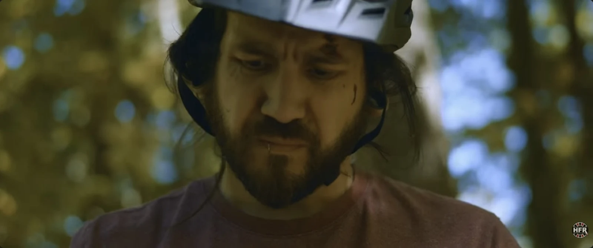
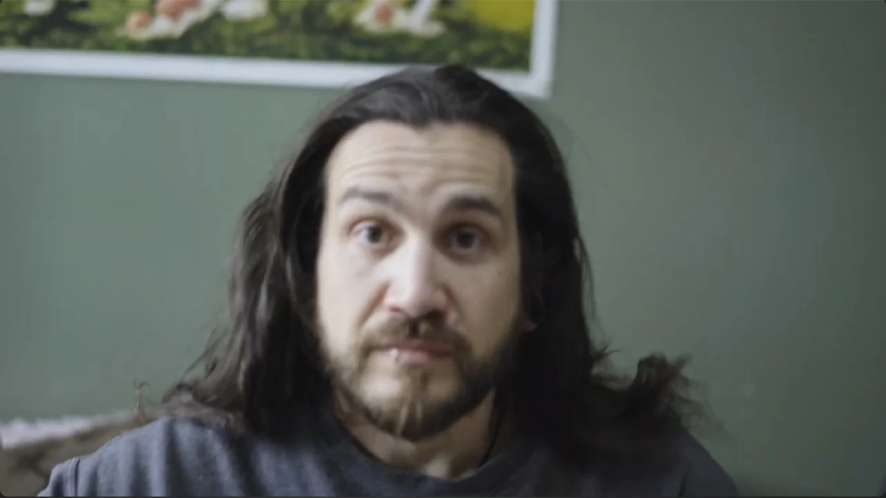
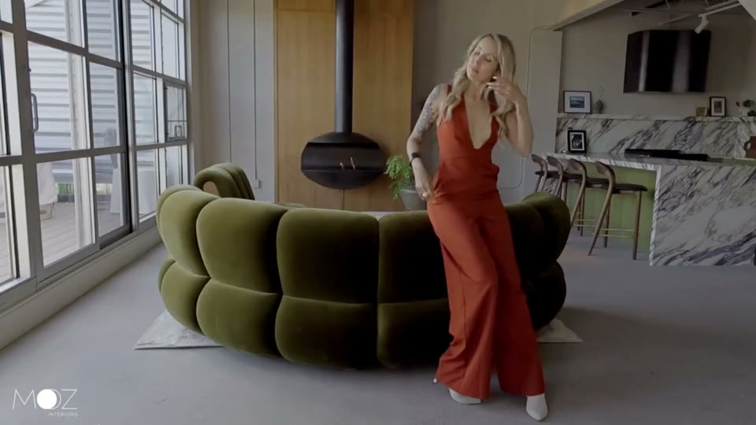

Scattered
3rd Best Film · Detroit 48HFP 2026


Assignment Friday night. Shot and cut across Saturday and Sunday. Uploaded with six minutes left on the clock.
The people
Bobby, Al, Joe & Kyle. Sideways Studio and LaB Media, mashed together for the weekend.
The weekend
July 25–26, 2026. Shot and cut at the same time for the Detroit 48 Hour Film Project.
It's a Boy.
Final cut in progress
A Michigan spring. A bigger crew.
More footage than time.
Still made the screening.
A late entry to The Comedy Roll, shot across four days in a Michigan spring. This is the cut that made the screening : a finished version is still in the works.
The people
Co-directed by Bobby & Al. A 13-person crew — the biggest ensemble LaB has run.
Making the room
Shot April 25, 27, 28 & 29, 2026. Screened at The Comedy Roll on May 17. Final cut in progress.
Trail Dead.
Horror Film Roulette 2025
Invisible threat.
Visible dread.
A bike ride takes a strange turn when a man comes across a camera that seems to be haunted.

A story, eventually.
Then the scramble.
We took a while to settle on a story. Then we shot it in two days, and edited it in in two more.😰
The people
Bobby, Al & Al's dad. Co-directed, co-written, both acting.
Roll to screen
Constraints drawn September 5. Shot September 20–21 after rewriting the story. Screened October 26 at Emagine Royal Oak, winning Best Editing.
Lookout.
Comedy Roll Film Festival 2025
Three days.
Across May.
A guy joins a gym, then discovers that cancelling his membership is considerably harder than signing up.
The people
Crew: Bobby, Al & Joe. Cast includes Derek, Kelly & Ashley.
The shoot
May 1: Derek and Kelly on camera. May 5: pickups. May 20: the last of it. Screened in the Top 25 at The Comedy Roll 2025.

People & places.
BRAND FILM / ARTIST SPOTLIGHTInterior design · Brand film / 2024
MOZ Interiors

A film for MOZ Interiors, moving through the textures, light, and character of a Detroit-designed space.
About the shoot
Filmed July 1, 2024. Bobby on A-cam and the edit; Larry on B-cam. One day moving through the finished spaces.
Artist spotlight / 2024
Anthony Brass

Inside Anthony Brass’s home studio: nature-inspired paintings, the process behind them, and his story in his own words.
About the shoot
Filmed March 4, 2024. Bobby on A-cam and the edit; Larry on B-cam. Natural light, a two-person crew, and narration written by Anthony.
More on 
Everything lives on the channel, including the pieces that didn't make the cut here.
Visit the channel →